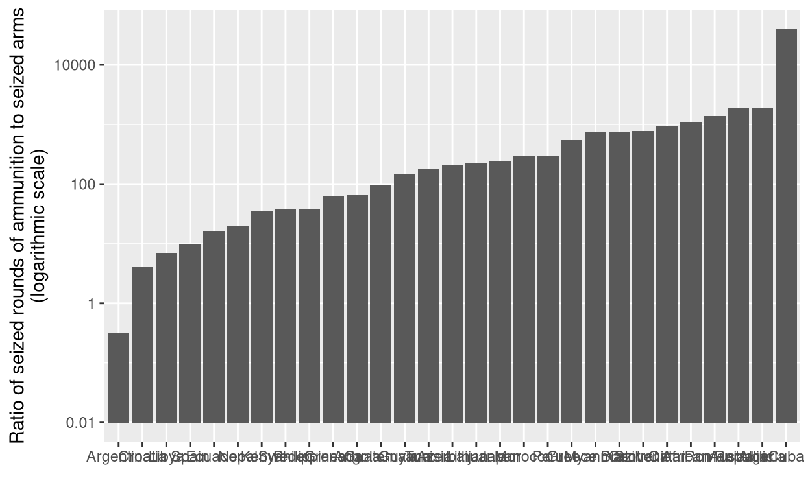
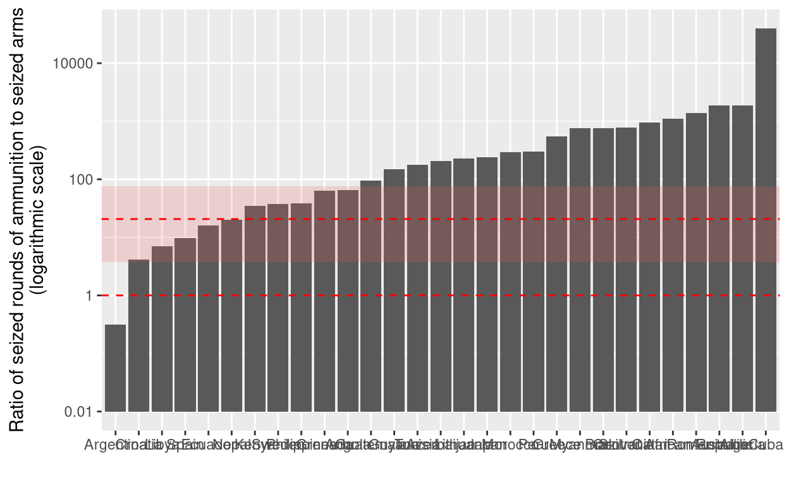
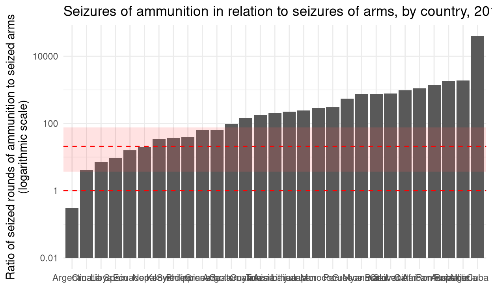
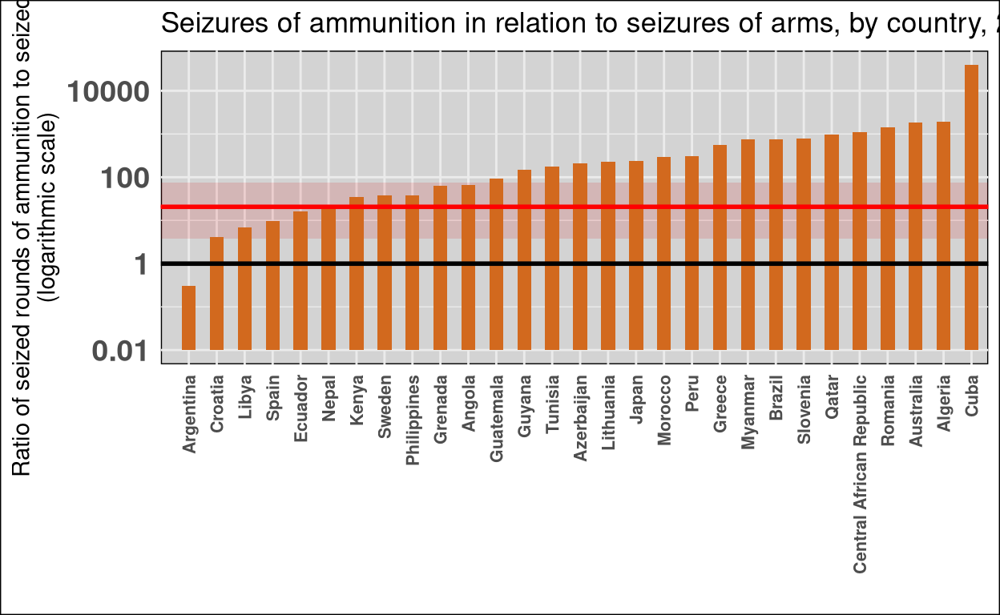
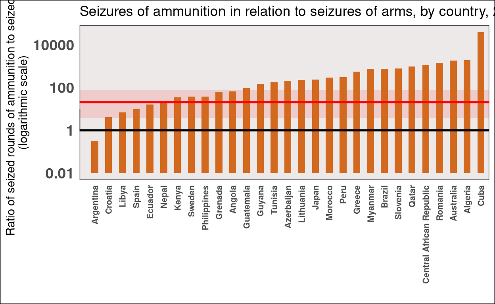
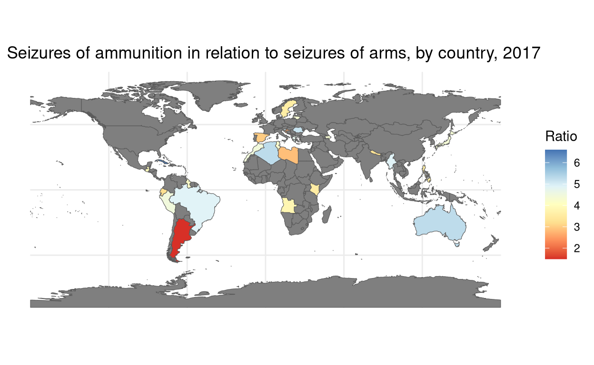

Introduction
The illicit trade of weapons is a pervasive issue with far-reaching consequences, intertwining elements of politics, society, and international relations. The trafficking of arms fuels conflicts, exacerbates human suffering, and poses a significant threat to global security.
Arms trafficking knows no borders, infiltrating regions plagued by political instability and social unrest. The consequences are dire, as these weapons often fall into the hands of non-state actors, perpetuating violence and hindering efforts for peace. The intertwined nature of this problem reflects the complex web of international relations, where the actions of one nation can have ripple effects across the globe.
Tackling the issue of arms trafficking requires a multi-faceted approach, involving collaboration between nations, strong regulations and a commitment to addressing the root causes of conflict. It also requires information to enable institutions to fully address the issue. This is where data becomes necessary.
Establishing a relationship between the different types of arms trafficking that exist and the conflicts that are currently taking place can be very useful in understanding and addressing this phenomenon. Creating a model that can explain the dynamics of arms (and components) trafficking at the regional level would provide researchers and decision-makers with a powerful tool to understand and prevent this menace.
That is why the intention of this paper will be to plot the ratio of ammunition seizures in relation to the number of arms seizures on a world map. The motivation for this work lies in the intention to identify regional trafficking dynamics around existing conflicts.
The original graph
The original graph can be found on page 29 of the UNODC Global Study on Firearms Trafficking 2020. The graph to be replicated is Figure 11.
The graph shows the relationship between ammunition seizures and weapons seizures per country in 2017. The X-axis represents the countries in which seizures occurred, and the Y-axis represents the ratio of seized rounds of ammunition to seized arms (in a logarithmic scale). The graph also has a line at the value 1 for the Y-axis, which indicates the boundary between a positive and a negative ratio. Similarly, the graph has a horizontal line above the median value (23), and a space dedicated to the common range.
Countries above the ratio = 1 are those where ammunition trafficking is higher than arms trafficking. This could indicate the presence of arms from previous conflicts and belonging to already armed groups, which require more ammunition than arms.
Conversely, where the ratio is < 1, a process of internal rearmament may be taking place. This is probably due to the involvement of third states in the financing of paramilitary or terrorist groups.
Working with the data
The database to be used comes from the UNODC (United Nations Office on Drugs and Crime) and can be found on the following link: UNODC Firearms Trafficking Dataset
The dataset contains Categories relating to the ‘Region’, ‘Subregion’ and ‘Country’. Similarly, the dataset contains information relating to the ‘Source’ that made the seizure and the year in which the seizure was made (2010 to 2020). Also, the dataset contains a specific category, ‘Indicator’, which gives information about the type of seizure (ammunition or arms). Finally, the dataset contains two more important collumns: ‘Dimension’, which explains the reason of the seizured; and ’Category, which indicates the illegal use of the equipment seized.
However, the dataset lacks the data that the UNODC appears to use to draft the aforementioned Global Study on Firearms Trafficking 2020. For this reason, the scope of the work will be reduced to the information available.
Libraries and dataset
The following libraries will be utilized throughout the entire project, encompassing both the replica and subsequent enhancements:
Due to the fact that the first two columns of the chosen dataset provides no information at all, we will load the .xlsx without them.
data <- read_excel("data_iafq_firearms_trafficking.xlsx", skip=2)
head(data)# A tibble: 6 × 13
Iso3_code Country Region Subregion Indicator Dimension Category
<chr> <chr> <chr> <chr> <chr> <chr> <chr>
1 AGO Angola Africa Sub-Saharan A… Arms sei… by legal… other
2 AGO Angola Africa Sub-Saharan A… Arms sei… by legal… unknown
3 AGO Angola Africa Sub-Saharan A… Arms sei… by legal… Altered…
4 AGO Angola Africa Sub-Saharan A… Arms sei… by legal… illicit…
5 AGO Angola Africa Sub-Saharan A… Arms sei… by legal… illicit…
6 AGO Angola Africa Sub-Saharan A… Individu… Total Total
# ℹ 6 more variables: Sex <chr>, Age <chr>, Year <dbl>,
# `Unit of measurement` <chr>, VALUE <dbl>, Source <chr>Data cleaning process
First of all:
The column “Year” represents the year of the record in the database. Since our chart to be replicated relies on data for the year 2017, we will select only records produced in that year.
data <- data[data$Year == 2017, ]
head(data)# A tibble: 6 × 13
Iso3_code Country Region Subregion Indicator Dimension Category
<chr> <chr> <chr> <chr> <chr> <chr> <chr>
1 AGO Angola Africa Sub-Saharan A… Ammuniti… Total Total
2 AGO Angola Africa Sub-Saharan A… Arms sei… by legal… Total
3 AGO Angola Africa Sub-Saharan A… Arms sei… by legal… illicit…
4 AGO Angola Africa Sub-Saharan A… Arms sei… by marki… Total
5 AGO Angola Africa Sub-Saharan A… Arms sei… by marki… unknown…
6 AGO Angola Africa Sub-Saharan A… Arms sei… by condi… Total
# ℹ 6 more variables: Sex <chr>, Age <chr>, Year <dbl>,
# `Unit of measurement` <chr>, VALUE <dbl>, Source <chr>Secondly:
The column “Indicator” indicates whether the data belongs to “Arms seized” or “Parts and components seized”. So we must filter the dataset so that it contains only these two values:
# A tibble: 6 × 13
Iso3_code Country Region Subregion Indicator Dimension Category
<chr> <chr> <chr> <chr> <chr> <chr> <chr>
1 AGO Angola Africa Sub-Saharan A… Ammuniti… Total Total
2 AGO Angola Africa Sub-Saharan A… Arms sei… by legal… Total
3 AGO Angola Africa Sub-Saharan A… Arms sei… by legal… illicit…
4 AGO Angola Africa Sub-Saharan A… Arms sei… by marki… Total
5 AGO Angola Africa Sub-Saharan A… Arms sei… by marki… unknown…
6 AGO Angola Africa Sub-Saharan A… Arms sei… by condi… Total
# ℹ 6 more variables: Sex <chr>, Age <chr>, Year <dbl>,
# `Unit of measurement` <chr>, VALUE <dbl>, Source <chr>Thirdly:
Since the columns “Dimension” and “Category” segment the total seizures into different subdivisions, we are interested in showing only the sum total of each of the columns. i.e. those values recorded as ‘Total’, in both columns:
# A tibble: 6 × 13
Iso3_code Country Region Subregion Indicator Dimension Category
<chr> <chr> <chr> <chr> <chr> <chr> <chr>
1 AGO Angola Africa Sub-Saha… Ammuniti… Total Total
2 AGO Angola Africa Sub-Saha… Arms sei… Total Total
3 ALB Albania Europe Southern… Arms sei… Total Total
4 ARG Argentina Ameri… Latin Am… Ammuniti… Total Total
5 ARG Argentina Ameri… Latin Am… Arms sei… Total Total
6 ATG Antigua and… Ameri… Latin Am… Arms sei… Total Total
# ℹ 6 more variables: Sex <chr>, Age <chr>, Year <dbl>,
# `Unit of measurement` <chr>, VALUE <dbl>, Source <chr>Fourth:
We convert the information in the “VALUE” column (total number of seizures) to a numerical value:
data$VALUE <- as.numeric(data$VALUE)
head(data)# A tibble: 6 × 13
Iso3_code Country Region Subregion Indicator Dimension Category
<chr> <chr> <chr> <chr> <chr> <chr> <chr>
1 AGO Angola Africa Sub-Saha… Ammuniti… Total Total
2 AGO Angola Africa Sub-Saha… Arms sei… Total Total
3 ALB Albania Europe Southern… Arms sei… Total Total
4 ARG Argentina Ameri… Latin Am… Ammuniti… Total Total
5 ARG Argentina Ameri… Latin Am… Arms sei… Total Total
6 ATG Antigua and… Ameri… Latin Am… Arms sei… Total Total
# ℹ 6 more variables: Sex <chr>, Age <chr>, Year <dbl>,
# `Unit of measurement` <chr>, VALUE <dbl>, Source <chr>Fifthly:
We proceed to calculate the ratio of “Ammunition seized” to “Arms seized”, under the previously established conditions.
ratiocalc <- data |>
group_by(data$Country) |>
reframe(
ratio = VALUE[Indicator == "Ammunition seized"] / VALUE[Indicator == "Arms seized"])
head(ratiocalc)# A tibble: 6 × 2
`data$Country` ratio
<chr> <dbl>
1 Algeria 189.
2 Angola 6.48
3 Argentina 0.0310
4 Australia 187.
5 Azerbaijan 20.7
6 Brazil 76.6 Building the graph
First replica
We proceed to create a first plot with the most basic information.
ggplot(ratiocalc, aes(x=reorder(`data$Country` , log10(ratio*1000)), y=log10(ratio*1000))) +
geom_col() +
scale_y_continuous(labels = function(x) 10^x/100) +
labs(x = ' ',
y= "Ratio of seized rounds of ammunition to seized arms
(logarithmic scale)"
) 
We then proceed to add both the value relative to the median and a horizontal line at the value 1 for the Y-axis, which will allow us to better differentiate countries above and below the ratio = 1.
Similarly, we can calculate the ‘common range’ and plot it on the graph.
mediana <- median(ratiocalc$ratio)
cuartil_ratio <- quantile(ratiocalc$ratio, c(0.25, 0.75))
rango_intercuartil_ratio <- cuartil_ratio[2] - cuartil_ratio[1]
ggplot(ratiocalc, aes(x=reorder(`data$Country` , log10(ratio*1000)), y=log10(ratio*1000))) +
geom_col() +
scale_y_continuous(labels = function(x) 10^x/100) +
labs(x = ' ',
y= "Ratio of seized rounds of ammunition to seized arms
(logarithmic scale)"
) +
geom_hline(yintercept = log10(mediana*100), linetype = "dashed", color = "red") +
geom_hline(yintercept = log10(100), linetype = "dashed", color = "red") +
geom_rect(aes(xmin = -Inf, xmax = Inf, ymin = log10(cuartil_ratio[1]*100), ymax = log10(cuartil_ratio[2]*100)),
fill = "red", alpha = 0.003) 
From here we proceed to modify the aesthetic section of the graphic:
Edition and color
The first modification consists of applying ‘theme_minimal()’ to the graph. We will also add a title to it.
ggplot(ratiocalc, aes(x=reorder(`data$Country` , log10(ratio*1000)), y=log10(ratio*1000))) +
geom_col() +
scale_y_continuous(labels = function(x) 10^x/100) +
labs(x = ' ',
y= "Ratio of seized rounds of ammunition to seized arms
(logarithmic scale)") +
ggtitle("Seizures of ammunition in relation to seizures of arms, by country, 2017") +
theme_minimal() +
geom_hline(yintercept = log10(mediana*100), linetype = "dashed", color = "red") +
geom_hline(yintercept = log10(100), linetype = "dashed", color = "red") +
geom_rect(aes(xmin = -Inf, xmax = Inf, ymin = log10(cuartil_ratio[1]*100), ymax = log10(cuartil_ratio[2]*100)),
fill = "red", alpha = 0.003) 
Next we will change the format of the text displayed on the X and Y axes. Similarly, we rotate the names on the X-axis by 90º, in order to make our graphics clearer.
ggplot(ratiocalc, aes(x=reorder(`data$Country` , log10(ratio*1000)), y=log10(ratio*1000))) +
geom_col() +
scale_y_continuous(labels = function(x) 10^x/100) +
labs(x = ' ',
y= "Ratio of seized rounds of ammunition to seized arms
(logarithmic scale)") +
ggtitle("Seizures of ammunition in relation to seizures of arms, by country, 2017") +
theme_minimal() +
scale_fill_manual(values = c("blue")) +
theme(axis.text.x = element_text(face = "bold", size = 8, vjust = -0.5)) +
theme(axis.text.y = element_text(face = "bold", size = 14)) +
geom_hline(yintercept = log10(mediana*100), linetype = "dashed", color = "red") +
geom_hline(yintercept = log10(100), linetype = "dashed", color = "red") +
annotate("segment", x = 0, y = log10(mediana*100), xend = 0.1, yend = log10(mediana*100), color = "red") +
geom_rect(aes(xmin = -Inf, xmax = Inf, ymin = log10(cuartil_ratio[1]*100), ymax = log10(cuartil_ratio[2]*100)),
fill = "red", alpha = 0.003) +
theme(axis.text.x = element_text(angle = 90, hjust = 1, vjust = 0.5))
Now, we can proceed to the introduction of aesthetic elements related to colour.
In this section we are interested in modifying: The background colour, the colour of the bars and the colour of the line relative to the ratio = 1.
In the same way, we will proceed in framing the graph:
ggplot(ratiocalc, aes(x=reorder(`data$Country` , log10(ratio*1000)), y=log10(ratio*1000))) +
geom_col(width = 0.5, fill = "#D2691E", position = "identity") +
scale_y_continuous(labels = function(x) 10^x/100) +
labs(x = ' ',
y= "Ratio of seized rounds of ammunition to seized arms
(logarithmic scale)") +
ggtitle("Seizures of ammunition in relation to seizures of arms, by country, 2017") +
theme_minimal() +
scale_fill_manual(values = c("blue")) +
theme(axis.text.x = element_text(face = "bold", size = 8, vjust = -0.5)) +
theme(axis.text.y = element_text(face = "bold", size = 14)) +
geom_hline(yintercept = log10(mediana*100), linetype = "solid", size = 1, color = "red") +
geom_hline(yintercept = log10(100), linetype = "solid", size = 1, color = "black") +
annotate("segment", x = 0, y = log10(mediana*100), xend = 0.1, yend = log10(mediana*100), color = "red") +
geom_rect(aes(xmin = -Inf, xmax = Inf, ymin = log10(cuartil_ratio[1]*100), ymax = log10(cuartil_ratio[2]*100)),
fill = "red", alpha = 0.003) +
theme(axis.text.x = element_text(angle = 90, hjust = 1, vjust = 0.5)) +
theme(panel.background = element_rect(fill = "lightgrey"),
plot.background = element_rect(fill = "white"))
Next, we remove the grid from the bottom of the graph, leaving us with our final replica.
Final graph
ggplot(ratiocalc, aes(x=reorder(`data$Country` , log10(ratio*1000)), y=log10(ratio*1000))) +
geom_col(width = 0.5, fill = "#D2691E", position = "identity") +
scale_y_continuous(labels = function(x) 10^x/100) +
labs(x = ' ',
y= "Ratio of seized rounds of ammunition to seized arms
(logarithmic scale)") +
ggtitle("Seizures of ammunition in relation to seizures of arms, by country, 2017") +
theme_minimal() +
scale_fill_manual(values = c("blue")) +
theme(axis.text.x = element_text(face = "bold", size = 8, vjust = -0.5)) +
theme(axis.text.y = element_text(face = "bold", size = 14)) +
geom_hline(yintercept = log10(mediana*100), linetype = "solid", size = 1, color = "red") +
geom_rect(aes(xmin = -Inf, xmax = Inf, ymin = log10(cuartil_ratio[1]*100), ymax = log10(cuartil_ratio[2]*100)),
fill = "red", alpha = 0.003) +
annotate("segment", x = -0.1, y = log10(100), xend = -0.1, yend = log10(1000), linetype = "solid") +
geom_hline(yintercept = log10(100), linetype = "solid", size = 1, color = "black") +
annotate("segment", x = 0, y = log10(mediana*100), xend = 0.1, yend = log10(mediana*100), color = "red") +
theme(axis.text.x = element_text(angle = 90, hjust = 1, vjust = 0.5)) +
theme(panel.background = element_rect(fill = "#EEE9E9"),
plot.background = element_rect(fill = "white")) +
theme(panel.grid.major = element_blank(),
panel.grid.minor = element_blank())
Limitations
While this graph represents an extremely clear identification of those countries that are on either side of the ratio = 1, this information is almost useless for gaining a regional (or global) understanding of the relationships between countries where arms trafficking occurs, their neighbours, and the regional circumstances that may cause this (regional conflicts, paramilitary groups, etc.).
It is for this reason that I consider that the best possible improvement to be made to this graph would be to transfer its data to a world map.
Improvements
To convert the information of our dataset we must use the functions related to the ‘rnaturalearth’ library, creating variables that represent in R our world map.
Subsequently, we will establish relationships between the variables ‘Country’ and the variable ‘Ratio’, since they are the ones we want to represent.
world <- ne_countries(scale = "medium", returnclass = "sf")
names(ratiocalc) <- c("Country", "ratio")
merged_data <- merge(world, ratiocalc, by.x = "name", by.y = "Country", all.x = TRUE)Final Map
Finally, we run the plot that will allow us to visualise our map:
ggplot(merged_data, aes(fill = log10(ratio*1000))) +
geom_sf() +
scale_fill_distiller(palette = "RdYlBu", direction = 1) + # Cambia el esquema de colores según tus preferencias
labs(fill = "Ratio",
title = "Seizures of ammunition in relation to seizures of arms, by country, 2017") +
theme_minimal()
Analysis and results
Although it is true that the database lacks the necessary information to establish a global mapping, the extrapolation of the data present in our dataset does allow us to visualise more clearly the disposition of certain regional focal points.
Meso-America and South-America
In the Mesoamerica and South America region we have data for: Guatemala, Ecuador, Peru, Guyana, Brazil and Argentina.
Here Argentina has the lowest ratio in the region by far. The interpretation of the data leads us to think that, at the regional level, Argentina has the highest levels with respect to the number of arms seized per quantity of ammunition seized. In this context, we could situate the dynamics of illegal arms trafficking in Brazil as the most diametrically opposed to those of Argentina. This would indicate that more ammunition has been seized in Brazil than in Argentina. The rest of the region is increasingly closer to a higher level of arms trafficking as we move northwards (Peru, Ecuador, Guyana and Guatemala).
In the absence of data that could provide information on the behaviour of the region as a whole, the overall reading is trivial, although it may be far from reality.
The fact that Argentina is the country in the region most specialised in arms trafficking could be due to its regional status. In this regard, Argentina does not have any internal conflicts, so it is to be expected that illegal arms trafficking is aimed at marketing arms to third countries.
The violence in the Southern Macrozone in Chile or the narco-terrorist insurgencies in Peru, Paraguay, Colombia and Ecuador can more than justify the need to acquire military materiel. Similarly, the fact that the data is so disproportionately in favour of Argentina would support the idea of the latter as a ‘proxy state’ on which a regional network of illegal arms trafficking could be built.
Mediterrenean Sea
Regarding the Mediterranean, we have data from the following countries: Morocco, Algeria, Tunisia, Libya and Spain.
The data with respect to Spain, which indicates more arms trafficking than ammunition trafficking, could be explained by its geographical position as the ‘gateway to the Mediterranean’ and a maritime exit to the North Atlantic. Further research with data from continental Europe could shed more light on this.
On the other side of the Strait of Gibraltar, Libya is the only country that shows similar figures to Spain. The Second Libyan Civil War (2014 - ) left the country fractured into different centres of power with access to different natural resources of vital importance for the functioning of the country as a whole. In a state where power is shared between local militias, terrorist groups, internationally mandated governments and unrecognised institutions, armed conflict is already an entrenched problem.
This would explain why illegal arms trafficking in Libya has a greater tendency towards arms, but maintains a certain level of presence in ammunition.
As for Algeria, the large quantity of seized ammunition could be due to the surplus of military materiel from the colonial era. While Morocco underwent a similar colonial process, the extent to which France armed its former colony is greater than that which occurred on Moroccan territory. The high levels of corruption in Morocco could explain a weak military chain of command, which sought to take advantage of the surplus. In a context of direct rivalry with Morocco (and with third states involved), it is not at all inconceivable that Algeria would consider selling military surplus to third countries as a means of financing.
With respect to the rest of the regions, the dataset provides insufficient information to make any kind of reading in this regard.
Further research
The motivation for this work arose from the intention to identify regional trafficking dynamics around existing conflicts. The next step (once identified) would be to give them a reason.
I believe that the best way to address the issue of illegal arms trafficking is to situate national contexts in the regional setting. These data (and their visualisation) gave us the opportunity to see (through their visualisation) different dynamics taking place in different regional settings.
I believe that this work, accompanied by historical, political and economic contextualisation, would reveal in depth the regional trends of illegal arms trafficking and their relationship to the geopolitical context in which it takes place.
From the numerical and historical analysis of regional trends in illicit arms trafficking we can expect a clear motivation behind any illegal transaction. The same motivation can give rise to a certain modus operandi, refined over time. Identifying such patterns and associating them with patterns would help to map (at a higher level) all the elements and actors involved in illegal arms trafficking. This would help to prevent and eradicate it.